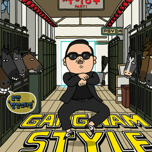

factors that affect why People are attracted
to K-pop


Given the fact that every K-pop idols have their beauty that fits the social standard, some idols didn't pass. Even if they are beautiful enough, if society says that they don't fit, then they don't. But it didn't stop them to be on top of the game. They make their standards that break the stereotypes.
SEVENTEEN- FALLING FLOWER
TWICE- FEEL SPECIAL
Before debuting or making a comeback, there are lots of work done while preparing for the title song of the album. Many trials and errors, many composers, lyricists, and producers are collaborating to make catchy songs. Some idols produce, write, and arrange their songs. The night becomes day, and the day becomes night just to create a beautiful melody. K-pop offers a variety of genres such as EDM, ballad, rock, and hip-hop, to name a few.
BIGBANG- FANTASTIC BABY
iKON- LOVE SCENARIO
K-pop idols are trained to have on-point facial expressions while at the camera, sings perfectly, and have powerful dance skills. They confined themselves in a practice room to create highly intensive choreography that may catch the attention of the public. On the other hand, some groups did not have difficult dance routines, but they will leave certain dance moves that complete their performances. From the angle of the hand, down to the one-of-a-kind footwork, moves should be precise and clean to maintain the energetic momentum of the performance.
MONSTA X- SHOOT OUT
NCT- BLACK ON BLACK
ASTRO- Again (Dance Practice)
GFRIEND- Me gustas tu (Dance Practice)
Society norms dictate how one should follow the culture, traditions, beliefs, and trends. Despite the conservative customs of South Korea, some idols aren't afraid to rule their world. Gender norms are heavily imposed in Korea, but K-pop idols don't let that gender stereotypes hinder them in achieving their goal. Many K-pop idols showing support in the LQBTQ+ community. A girl group with tomboyish look member? Yes, girl, that is possible. Amber Liu, a former member of the girl group f(x), shows the world that gender shouldn't be the reason to stop you from dreaming. Not fit in the society? Well, she doesn't hesitate to break the gender norms. Too gorgeous but you're a man? Well, NU'EST Ren is known for having a gorgeous face, he even has long silky hair, wears lace and floral clothes and he's been pushing the boundaries that man should look masculine. He even featured in advertisements for a women’s online clothing store back in 2016, modeling dresses, skirts, and blouses with stunning fluidity.
Hwasa's cool speech about beauty standards
Korean male idols wearing crop tops.
NU'EST Ren
Amber Liu, former member of f(x)
K-pop idols are also relatable. Survival show is not new to South Korea. They will let the trainees compete with each other to be one of the members in the debut line-up. It is a cruel fight among the youth trainees who want to achieve their goals in life. Because of survival shows, K-pop fans are relating their lives to the life of their idol. Just like us, they are also fighting a battle to become successful, make their parents proud, give back to the sacrifices they've done, and achieve a comfortable life. Watching survival shows also gives emphasis to the blood, sweat, and tears our idol sacrifices just to become famous. It shows the humane side of the K-pop community.
There are also various shows that bring out the funny and free-spirit side of the idols. We often watch their reality shows and understand how they perceived life, how they make solutions to a certain problem, and show the real person under their stage name. Their actions on the reality shows make the heart of the fans melt because fans realize that they are human too. Live a simple life, talk to pets, fighting with other people, and getting tired just like their fans do.
YG TREASURE BOX (YG 보석함)- was a survival show produced by YG Entertainment.
The Real Men 300- South Korean variety show featuring eight male celebrities as they experience life in the military, which is mandatory for all mentally sound and able-bodied Korean men for two years.
Those are some of the reasons why K-pop is dominating the world. Music is truly a language that makes the world united despite having differences in many aspects of life. K-pop proved that to the world as they keep on dominating the music industry. The music they make is the representation of our feeling, opinion, and the things that we didn't speak up about. Regardless of what age you are, what race you belong to, what language you speak, and what gender you, you can idolize a person because fangirling/fanboying doesn't see any differences in every individual. It makes the fans around the world become one.
Created with Mobirise - Learn more